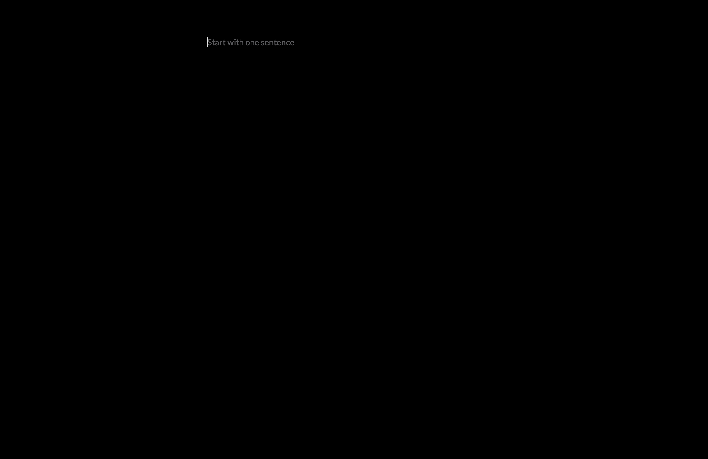

currently exploring
ai and drug design, with a focus on diffusion models.
june 22, 2026
scaling embeddings-based search for tks life
mapped out architecture for scaling embeddings-based search for tks life so students can search through 30,000 projects in a natural language way. this will also allow students to find other students through gpt-based natural language. so if students ask things like "who else is interested in x?" or "who in toronto is working on ai and climate change?" it spits out all the info.
hopefully this makes it 10x easier for kids to find and connect with other kids.
also made lots of improvements to my modded version of freewrite. it's buttery smooth now.
if you want try it out, clone this: happypotomus/freewrite-editor, or grab the freewrite-editor v0.1.1 (msg me if you run into bugs).
personal note: even though i'm in chicago, had an insanely productive day today. this is largely because the targets or goals i'm trying to hit are not fuzzy. they're very clear. as a result, the pathway to get there is also clearer. allows me to do 8 hrs of work in 4.
june 21, 2026
freewrite and ai education essay
i modded freewrite farzaa/freewrite so it's perfect to my writing vibe and specs - no distractions or anything else.

after that finished my essay on ai and education.
personal note: enjoying lots of family time in chicago this weekend
june 19, 2026
animation explainer for the diffusion process
today i looked into building an animated explainer video for the diffusion process i worked through earlier this week. i experimented with manim and claude code, and found that it was surprisingly effortless to put together a clear visual explanation.
i remember watching 3blue1brown videos and feeling deeply impressed by the quality of the animations. it is pretty wild that i can now make something in that style myself with very little friction.
june 18, 2026
scoping small-molecule diffusion for drug discovery
today i spent 2.5 hours scoping a small-molecule diffusion project for drug design: a google colab notebook that generates 3d molecular conformers from smiles, adds gaussian noise to atom coordinates, and trains models to denoise them.
the project starts with an mlp baseline, then upgrades to a simple graph neural network so the model can use molecular bond structure, with visualizations and metrics like rmsd and bond-length error to compare clean, noisy, and denoised conformers.
after talking to divyun, another interesting area to possibly look into is protein diffusion models. that feels like a natural next direction once the small-molecule version is clearer.
i also still have a curiosity about rag pipelines coming out of yesterday's embeddings workshop, so that may be another thread to explore soon.
colab notebook
watch the build session
11:50pm: ran a successful small rag pipeline test for tks life projects. the goal now is to scale this for 1000+ students so they can easily find projects through natural language query.
june 17, 2026
rag and embeddings workshop at the ai science summit
today i was in san francisco for the ai science summit and got to meet with a deepmind engineer who led us through a foundational rag and embeddings workshop.
we went into the mechanics of taking data from documents, embedding that data, and then working with google's embedding models to run queries over it.